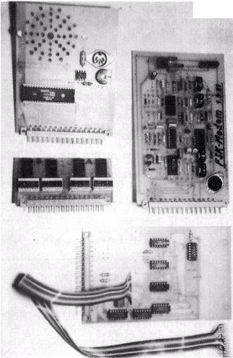

Nascom Journal |
Dezember 1981 · Ausgabe 11/12 |
BILD 1
Ein Leser fand die Bezeichnung „BUS“ nicht ganz gerechtfertigt und schlug „PIO Schnittstelle“ vor. NPS (für Nascom PIO Schnittstelle) klingt zwar gar nicht schlecht, da es sich aber unter den Lesern schon ziemlich eingebürgert hat, bleiben wir vielleicht doch lieber bei der alten Bezeichnung.
BILD 3
Hier nun ein Vorschlag zum Einbau einer 31-pol. Buchse nach DIN 41617 in ein Tastaturgehäuse. In Bild 3 sehen Sie die Platinen des Soundgenerators, eines FSK Modems (nach Elektor), einer 7-Segment-Anzeige und des MDCR-Interfaces von Herrn Lotter. Bild 2 zeigt, wie problemlos der Eprommer von Herrn Ploss eingeschoben werden kann, ohne störende Kabel. Schnell kann er gegen irgend eine andere Schaltung ausgetauscht werden, die über den selben Port angesteuert wird.
BILD 2
Und hier vielleicht noch eine kleine Programmidee für diejenigen unter uns, die noch keinen Disassembler ihr Eigen nennen können. Der von Herrn Deege umgeschriebene Disassembler läuft nicht schlecht, und so habe ich ihn dazu benutzt, um bei der Erstellung dieser Cassette einiges an Zeit einzusparen. Die Listings der Programme CONMOD und GKSU wurden vom Disassembler direkt in den Textspeicher des Formatierprogramms geschrieben und konnten danach an das NAS-SYS Format mühelos angepaßt werden. Anstelle des Aufrufs von ROUT (RST 30) wurde der Unterprogrammaufruf CD 20 40 eingeschrieben. Das Programm sieht dann so aus:
| Seite 49 von 55 |
|---|